CODING AGENTS AS PIXEL WORLD MODELS
traex/GPT-6.1-Sol · 0127
点击播放 · 原生 RGB 像素
逐轮保存的候选
回放视频、检查图与代码变化。
每份候选均可单独播放。实际图片检查记录在下方工具轨迹中。
候选 01播放与检查图
点击播放 · 原生 RGB 像素

展开代码变化
--- 上一保存版本
+++ 本次保存版本
@@ -0,0 +1,164 @@
+from pathlib import Path
+import numpy as np
+import cv2
+from PIL import Image
+from scipy.ndimage import gaussian_filter
+import artifact_io
+
+ROOT=Path(__file__).resolve().parent
+H,W=144,256
+S=4
+
+def background(I):
+ # Reconstruct the small region hidden by the paper using the visible walls,
+ # tabletop grain and the same dish's radial profiles.
+ y,x=np.mgrid[:H,:W]
+ p=np.array([[123,22],[136,27],[142,28],[171,18],[175,37],[177,60],[182,84],[183,101],[176,108],[133,111],[129,84],[126,58]],np.int32)
+ m=np.zeros((H,W),np.uint8);cv2.fillPoly(m,[p],255);m=cv2.dilate(m,np.ones((5,5),np.uint8))
+ boundary=63.15-.1108*x
+ wallw=np.clip(boundary-y+.5,0,1)
+ F=np.stack([np.ones_like(x),x/256,y/144,(x/256)**2,(y/144)**2,x*y/(256*144)],-1)
+ known=(m==0)&(wallw>.99)&(x>90)&(x<207)&(y>13)&(y<55)
+ wall=F@np.linalg.lstsq(F[known],I[known],rcond=None)[0]
+ known=(y>boundary+2)&(y<62)&((x<123)|(x>186))&(x>80)&(x<214)
+ Fw=np.stack([np.ones_like(x),x/256,y/144],-1)
+ woodbase=Fw@np.linalg.lstsq(Fw[known],I[known],rcond=None)[0]
+ blur=cv2.GaussianBlur(I.astype(np.float32),(0,0),1.2)
+ grain=I-blur
+ sx=(88+(x-88)%32).astype(np.float32);sy=np.clip(y+54*.1108,52,62).astype(np.float32)
+ g=cv2.remap(grain.astype(np.float32),sx,sy,cv2.INTER_LINEAR,borderMode=cv2.BORDER_REFLECT)
+ wood=woodbase+g*.8
+ bg=wood*(1-wallw[...,None])+wall*wallw[...,None]
+ cx,cy=149.8,92.5;a,b=59.1,24.5;theta=-.063
+ X=(x-cx)*np.cos(theta)+(y-cy)*np.sin(theta);Y=-(x-cx)*np.sin(theta)+(y-cy)*np.cos(theta)
+ r=np.sqrt((X/a)**2+(Y/b)**2)
+ def sample(ang):
+ xx=cx+r*a*np.cos(ang)*np.cos(theta)-r*b*np.sin(ang)*np.sin(theta)
+ yy=cy+r*a*np.cos(ang)*np.sin(theta)+r*b*np.sin(ang)*np.cos(theta)
+ return cv2.remap(I.astype(np.float32),xx.astype(np.float32),yy.astype(np.float32),cv2.INTER_LINEAR,borderMode=cv2.BORDER_REFLECT)
+ l=sample(-2.43);q=sample(-.60);mix=np.clip((X/a+.6)/1.2,0,1)[...,None];rim=l*(1-mix)+q*mix
+ cx2,cy2=150.3,95.2;a2,b2=47.8,17.3
+ X2=(x-cx2)*np.cos(theta)+(y-cy2)*np.sin(theta);Y2=-(x-cx2)*np.sin(theta)+(y-cy2)*np.cos(theta)
+ r2=np.sqrt((X2/a2)**2+(Y2/b2)**2)
+ F2=np.stack([np.ones_like(x),X2/a2,Y2/b2,(X2/a2)**2,(Y2/b2)**2,X2*Y2/(a2*b2)],-1)
+ known=(r2<.97)&(m==0)
+ water=F2@np.linalg.lstsq(F2[known],I[known],rcond=None)[0]
+ aw=np.clip((1-r)*20+.5,0,1)[...,None];bg=bg*(1-aw)+rim*aw
+ al=np.clip((1-r2)*12+.5,0,1)[...,None];bg=bg*(1-al)+water*al
+ cv2.ellipse(m,(158,103),(23,7),-3,0,360,255,-1)
+ cv2.fillPoly(m,[np.array([[173,41],[177,41],[183,68],[171,72]],np.int32)],255)
+ a=cv2.GaussianBlur(cv2.dilate(m,np.ones((5,5),np.uint8)).astype(float)/255,(0,0),1.3);a[m>0]=1
+ out=I*(1-a[...,None])+bg*a[...,None]
+ # Withdraw the small orange jaw, preserving its original appearance.
+ gm=np.zeros((H,W),np.uint8);cv2.fillPoly(gm,[np.array([[128,0],[143,0],[149,10],[143,15],[133,11]],np.int32)],255)
+ gm=cv2.dilate(gm,np.ones((3,3),np.uint8));fill=cv2.inpaint(np.uint8(np.clip(out,0,255)),gm,4,cv2.INPAINT_TELEA).astype(float)
+ return out,fill,gm,r2
+
+def source_geometry(u,v):
+ knots=[0,.15,.28,.4,.65,1]
+ xt=np.interp(u,knots,[125.8,132,137.5,142,154,170.2]);yt=np.interp(u,knots,[24,28,31,29,25,20.5])
+ xb=np.interp(u,knots,[134.7,140.2,143.1,149,162.2,179.7]);yb=np.interp(u,knots,[106.5,102.4,101,100,99.5,97.6])
+ return xt*(1-v)+xb*v,yt*(1-v)+yb*v
+
+def geometry(u,v,t):
+ xs,ys=source_geometry(u,v)
+ # Gravity-driven toppling around the immersed lower edge, followed by a
+ # small damped flutter and capillary-induced relaxation of the fold.
+ f=np.clip(t/.72,0,1)
+ angle=np.pi/2*(f*f*(3-2*f))
+ sn=np.sin(angle);cs=np.cos(angle)
+ xf=(123.5+55*u)*(1-v)+(134.7+45*u)*v
+ xf+=1.1*np.sin(np.pi*v)*np.sin(3*np.pi*u)
+ xt=xs*(1-sn)+xf*sn
+ _,yb=source_geometry(u,np.ones_like(v))
+ topdist=(yb-ys)
+ yt=yb-topdist*cs-((21-4*u)*(1-v))*sn
+ # The curved left flap gradually folds down as water wets its fibers.
+ curl=3.8*np.exp(-((u-.19)/.14)**2)*np.sin(np.pi*v)
+ yt-=curl*sn*np.exp(-max(t-.7,0)*.65)
+ xt+=.55*np.sin(7.5*max(t-.72,0))*np.exp(-max(t-.72,0)*1.5)*sn
+ yt+=.7*np.sin(9*max(t-.72,0))*np.exp(-max(t-.72,0)*1.7)*np.sin(np.pi*v)*sn
+ return xt,yt,sn
+
+def uv_maps(t):
+ nu,nv=21,33
+ u,v=np.meshgrid(np.linspace(0,1,nu),np.linspace(0,1,nv))
+ px,py,_=geometry(u,v,t)
+ px*=S;py*=S
+ U=np.full((H*S,W*S),-1,np.float32);V=U.copy()
+ for j in range(nv-1):
+ for i in range(nu-1):
+ for ids in [[(j,i),(j,i+1),(j+1,i+1)],[(j,i),(j+1,i+1),(j+1,i)]]:
+ pp=np.array([[px[jj,ii],py[jj,ii]] for jj,ii in ids]);uv=np.array([[u[jj,ii],v[jj,ii]] for jj,ii in ids])
+ l=max(0,int(np.floor(pp[:,0].min())));r=min(W*S-1,int(np.ceil(pp[:,0].max())))
+ a=max(0,int(np.floor(pp[:,1].min())));b=min(H*S-1,int(np.ceil(pp[:,1].max())))
+ if l>r or a>b:continue
+ yy,xx=np.mgrid[a:b+1,l:r+1]; xx=xx+.5;yy=yy+.5
+ p0,p1,p2=pp
+ den=(p1[1]-p2[1])*(p0[0]-p2[0])+(p2[0]-p1[0])*(p0[1]-p2[1])
+ if abs(den)<1e-6:continue
+ w0=((p1[1]-p2[1])*(xx-p2[0])+(p2[0]-p1[0])*(yy-p2[1]))/den
+ w1=((p2[1]-p0[1])*(xx-p2[0])+(p0[0]-p2[0])*(yy-p2[1]))/den;w2=1-w0-w1
+ inside=(w0>=-1e-5)&(w1>=-1e-5)&(w2>=-1e-5)
+ uu=w0*uv[0,0]+w1*uv[1,0]+w2*uv[2,0];vv=w0*uv[0,1]+w1*uv[1,1]+w2*uv[2,1]
+ U[a:b+1,l:r+1][inside]=uu[inside];V[a:b+1,l:r+1][inside]=vv[inside]
+ return U,V
+
+def render(I,bg,fill,gm,r2,t):
+ # Release and lift the visible tip straight out through the top of frame.
+ if t<.5:
+ disp=round(28*t)
+ A=np.array([[1,0,0],[0,1,-disp]],np.float32)
+ tool=cv2.warpAffine(I.astype(np.float32),A,(W,H))
+ toolalpha=cv2.warpAffine((gm/255).astype(np.float32),A,(W,H))
+ base=fill*(1-toolalpha[...,None])+tool*toolalpha[...,None]
+ else:base=fill.copy()
+ yy,xx=np.mgrid[:H,:W]
+ # Gentle short-lived elliptical waves in the shallow liquid.
+ d=np.sqrt(((xx-151)/1.0)**2+((yy-96)/.37)**2)
+ tau=max(t-.36,0)
+ amp=2.1*np.exp(-tau*1.5)*np.clip(tau*5,0,1)
+ wave=amp*np.sin((d-24*tau)*.67)*np.exp(-((d-24*tau)/15)**2)
+ base+=wave[...,None]*np.array([.55,.95,1.1])*(r2<.96)[...,None]
+ U,V=uv_maps(t);a=(U>=0).astype(np.float32)
+ sx,sy=source_geometry(np.clip(U,0,1),np.clip(V,0,1))
+ tex=cv2.remap(I.astype(np.float32),sx.astype(np.float32),sy.astype(np.float32),cv2.INTER_CUBIC,borderMode=cv2.BORDER_REFLECT)
+ _,_,flat=geometry(np.array([0.]),np.array([0.]),t);flat=float(flat)
+ u=np.clip(U,0,1);v=np.clip(V,0,1)
+ # Preserve the photographed material detail, removing the standing fold's
+ # deep illumination shadow as the face turns to lie under the light.
+ sm=cv2.GaussianBlur(I.astype(np.float32),(0,0),1)
+ detail=cv2.remap((I-sm).astype(np.float32),sx.astype(np.float32),sy.astype(np.float32),cv2.INTER_CUBIC)
+ crease=np.exp(-((u-.31)/.075)**2)
+ shading=207-20*crease-4*np.sin(np.pi*v)+2*np.cos(5*np.pi*u)*np.sin(3*np.pi*v)
+ dry=shading[...,None]+np.array([-2,-3,2])+detail*.65
+ tex=tex*(1-flat*.92)+dry*flat*.92
+ # The submerged edge wets first, then liquid quickly wicks up the towel.
+ front=np.clip(.92-t*.58,-1,1)
+ wet=np.clip((v-front)/.23,0,1)
+ wet*=np.clip(t*.6,0,1)
+ wetshade=shading-199
+ wetcol=np.stack([155+wetshade*.55,187+wetshade*.57,199+wetshade*.6],-1)+detail*.45
+ tex=tex*(1-wet[...,None]*.88)+wetcol*wet[...,None]*.88
+ # Naturally frayed/thin edge with a soft rather than cutout silhouette.
+ dist=np.minimum(np.minimum(u,1-u)*45,np.minimum(v,1-v)*23)
+ a*=np.clip(dist/.24,0,1)
+ a=cv2.GaussianBlur(a,(0,0),.80)
+ color=cv2.GaussianBlur(tex*a[...,None],(0,0),.65)
+ masksmall=cv2.resize(a,(W,H),interpolation=cv2.INTER_AREA)
+ shadow=cv2.GaussianBlur(masksmall,(0,0),1.3)
+ watermask=(r2<.98).astype(float)
+ base-=shadow[...,None]*np.array([7,10,11])*watermask[...,None]*flat
+ high=cv2.resize(base.astype(np.float32),(W*S,H*S),interpolation=cv2.INTER_CUBIC)
+ out=high*(1-a[...,None])+color
+ out=cv2.resize(out,(W,H),interpolation=cv2.INTER_AREA)
+ return np.uint8(np.clip(out,0,255))
+
+def main():
+ I=np.array(Image.open(ROOT/'first_frame.png').convert('RGB')).astype(float)
+ bg,fill,gm,r2=background(I)
+ frames=[I.astype(np.uint8)]
+ for k in range(1,20):frames.append(render(I,bg,fill,gm,r2,k/4))
+ artifact_io.save(np.stack(frames),ROOT)
+ Image.fromarray(np.uint8(np.clip(fill,0,255))).save(ROOT/'.tmp/clean_plate.png')
+if __name__=='__main__':main()
候选 02播放与检查图
点击播放 · 原生 RGB 像素

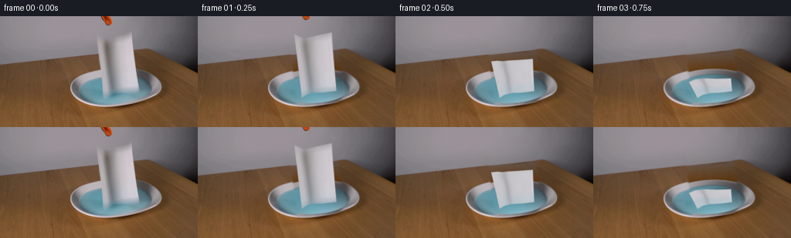
展开代码变化
--- 上一保存版本
+++ 本次保存版本
@@ -23,9 +23,9 @@
known=(y>boundary+2)&(y<62)&((x<123)|(x>186))&(x>80)&(x<214)
Fw=np.stack([np.ones_like(x),x/256,y/144],-1)
woodbase=Fw@np.linalg.lstsq(Fw[known],I[known],rcond=None)[0]
- blur=cv2.GaussianBlur(I.astype(np.float32),(0,0),1.2)
+ blur=cv2.GaussianBlur(I.astype(np.float32),(0,0),2)
grain=I-blur
- sx=(88+(x-88)%32).astype(np.float32);sy=np.clip(y+54*.1108,52,62).astype(np.float32)
+ sx=(92+(x-120)*.34).astype(np.float32);sy=(y+(x-sx)*.1108).astype(np.float32)
g=cv2.remap(grain.astype(np.float32),sx,sy,cv2.INTER_LINEAR,borderMode=cv2.BORDER_REFLECT)
wood=woodbase+g*.8
bg=wood*(1-wallw[...,None])+wall*wallw[...,None]
候选 04播放与检查图
点击播放 · 原生 RGB 像素
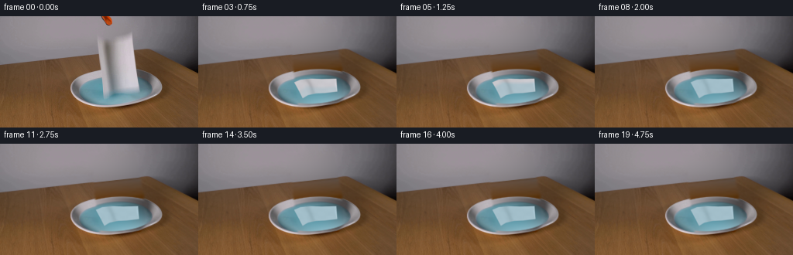
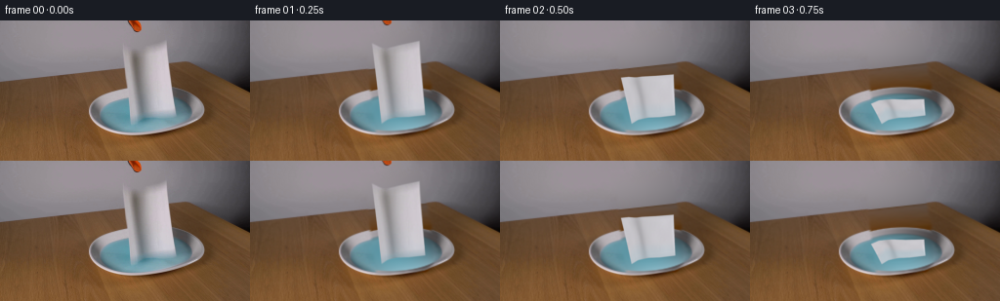
展开代码变化
--- 上一保存版本
+++ 本次保存版本
@@ -25,7 +25,7 @@
woodbase=Fw@np.linalg.lstsq(Fw[known],I[known],rcond=None)[0]
blur=cv2.GaussianBlur(I.astype(np.float32),(0,0),2)
grain=I-blur
- sx=(92+(x-120)*.34).astype(np.float32);sy=(y+(x-sx)*.1108).astype(np.float32)
+ sx=(89+(x-120)*.17).astype(np.float32);sy=np.clip(y+(x-sx)*.1108,51,75.5).astype(np.float32)
g=cv2.remap(grain.astype(np.float32),sx,sy,cv2.INTER_LINEAR,borderMode=cv2.BORDER_REFLECT)
wood=woodbase+g*.8
bg=wood*(1-wallw[...,None])+wall*wallw[...,None]
候选 05播放与检查图
点击播放 · 原生 RGB 像素
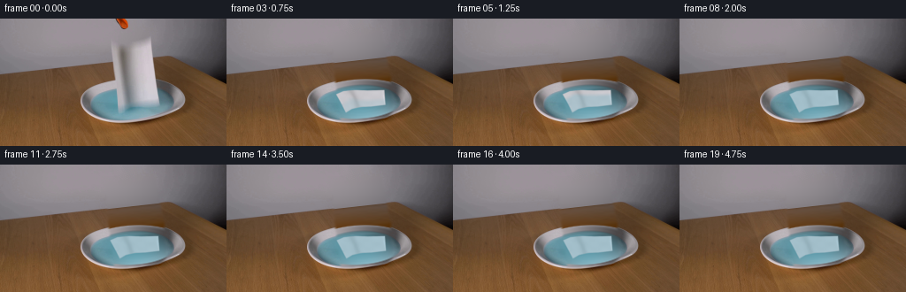
展开代码变化
--- 上一保存版本
+++ 本次保存版本
@@ -2,7 +2,6 @@
import numpy as np
import cv2
from PIL import Image
-from scipy.ndimage import gaussian_filter
import artifact_io
ROOT=Path(__file__).resolve().parent
@@ -76,6 +75,7 @@
# The curved left flap gradually folds down as water wets its fibers.
curl=3.8*np.exp(-((u-.19)/.14)**2)*np.sin(np.pi*v)
yt-=curl*sn*np.exp(-max(t-.7,0)*.65)
+ xt+=.85*(1-np.exp(-max(t-.72,0)*.8))*sn
xt+=.55*np.sin(7.5*max(t-.72,0))*np.exp(-max(t-.72,0)*1.5)*sn
yt+=.7*np.sin(9*max(t-.72,0))*np.exp(-max(t-.72,0)*1.7)*np.sin(np.pi*v)*sn
return xt,yt,sn
@@ -150,11 +150,12 @@
watermask=(r2<.98).astype(float)
base-=shadow[...,None]*np.array([7,10,11])*watermask[...,None]*flat
high=cv2.resize(base.astype(np.float32),(W*S,H*S),interpolation=cv2.INTER_CUBIC)
- out=high*(1-a[...,None])+color
- out=cv2.resize(out,(W,H),interpolation=cv2.INTER_AREA)
+ correction=cv2.resize(color-high*a[...,None],(W,H),interpolation=cv2.INTER_AREA)
+ out=base+correction
return np.uint8(np.clip(out,0,255))
def main():
+ (ROOT/'.tmp').mkdir(exist_ok=True)
I=np.array(Image.open(ROOT/'first_frame.png').convert('RGB')).astype(float)
bg,fill,gm,r2=background(I)
frames=[I.astype(np.uint8)]
可观测工具轨迹
实际执行的命令与返回图片。
命令 1exit 0
/bin/bash -lc "cat prompt.txt && printf '\\n---RULES---\\n' && cat GENERATION_RULES.md && printf '\\n---FILES---\\n' && ls -la"
命令 2exit 0
/bin/bash -lc "cat artifact_io.py && python - <<'PY'
from PIL import Image
im=Image.open('first_frame.png'); print(im.size); im.resize((1024,576)).save('.tmp/enlarged.png')
PY"命令 3exit 0
/bin/bash -lc "python - <<'PY'
import cv2, numpy as np
print(cv2.__version__)
from PIL import Image,ImageDraw
im=Image.open('first_frame.png').resize((1024,576)); d=ImageDraw.Draw(im)
for x in range(80,211,10):d.line((x*4,40*4,x*4,125*4), fill='red',width=1);d.text((x*4,40*4),str(x),fill='yellow')
for y in range(50,121,10):d.line((80*4,y*4,215*4,y*4),fill='red',width=1);d.text((80*4,y*4),str(y),fill='yellow')
im.save('.tmp/grid.png')
PY"命令 4exit 0
/bin/bash -lc "python - <<'PY'
import numpy as np
from PIL import Image
im=np.array(Image.open('first_frame.png'))
for y in [19,20,21,22,23,25,28,30,40,60,70,80,90,100,106]:
print(y,[(x,im[y,x].tolist()) for x in [124,126,128,130,132,135,138,142,150,165,170,175,180,183]])
PY"命令 5exit 0
/bin/bash -lc "mkdir -p .tmp && cat > .tmp/bg_test.py <<'PY'
import numpy as np,cv2
from PIL import Image
I=np.array(Image.open('first_frame.png')).astype(float); H,W=I.shape[:2];y,x=np.mgrid[:H,:W]
# outline of the suspended towel including soft edge
poly=np.array([[123,21],[126,20],[138,30],[145,27],[169,18],[173,19],[182,101],[176,106],[148,108],[134,109],[130,92],[128,65],[124,40]],np.int32)
mask=np.zeros((H,W),np.uint8);cv2.fillPoly(mask,[poly],255)
# edge of table continues original diagonal
boundary=63.7-.111*x
wall=(y<boundary)
# smooth second degree polynomial of wall colors with samples nearby
known=(mask==0)&wall&(x>100)&(x<195)&(y>13)&(y<57)
features=np.stack([np.ones_like(x),x/256,y/144,(x/256)**2,(y/144)**2,x*y/(256*144)],-1)
coef=np.linalg.lstsq(features[known],I[known],rcond=None)[0]
bg=I.copy();pred=features@coef
bg[(mask>0)&wall]=pred[(mask>0)&wall]
# wood donor stripes with local lighting
wood=(~wall)&(y<73)
for yy in range(H):
for xx in range(W):
if mask[yy,xx] and wood[yy,xx]:
# read from left of occlusion, soft grained wood
sx=xx-49
bg[yy,xx]=I[yy,sx]*np.array([.90,.90,.90])
# parametric elliptical plate, fit ring from existing data
cx,cy=149.7,92.1; a,b=59.2,24.7;theta=-.077
X=(x-cx)*np.cos(theta)+(y-cy)*np.sin(theta);Y=-(x-cx)*np.sin(theta)+(y-cy)*np.cos(theta)
r=np.sqrt((X/a)**2+(Y/b)**2);ang=np.arctan2(Y/b,X/a)
# elliptical liquid disk
cx2,cy2=150.3,95.2; a2,b2=47.8,17.3
X2=(x-cx2)*np.cos(theta)+(y-cy2)*np.sin(theta);Y2=-(x-cx2)*np.sin(theta)+(y-cy2)*np.cos(theta)
r2=np.sqrt((X2/a2)**2+(Y2/b2)**2)
plate=(r<1.035)&(r2>1.03)
# fit color vs angle and radial
F=np.stack([np.ones_like(r),r,r*r,np.sin(ang),np.cos(ang),np.sin(2*ang),np.cos(2*ang),r*np.sin(ang),r*np.cos(ang),r*r*np.sin(ang),r*r*np.cos(ang)],-1)
known=plate&(mask==0)&(r<.96)&(r2>1.05)
coef=np.linalg.lstsq(F[known],I[known],rcond=None)[0];rim=np.clip(F@coef,0,255)
# mix thin plate outside edge toward backdrop
p=(mask>0)&plate
bg[p]=rim[p]
# fit water color visible
F2=np.stack([np.ones_like(x),X2/a2,Y2/b2,(X2/a2)**2,(Y2/b2)**2,X2*Y2/(a2*b2)],-1)
known=(r2<.95)&(mask==0)
coef=np.linalg.lstsq(F2[known],I[known],rcond=None)[0];water=np.clip(F2@coef,0,255)
p=(mask>0)&(r2<=1.03);bg[p]=water[p]
# smooth synthesized pixels lightly and blend with original outside mask
blend=cv2.GaussianBlur(mask.astype(float)/255,(5,5),.65)
# Dilated mask boundary removes halo completely, plain generated region
bg=np.clip(bg,0,255).astype(np.uint8)
Image.fromarray(bg).save('.tmp/background.png');Image.fromarray(bg).resize((1024,576)).save('.tmp/background_large.png')
np.savez('.tmp/bgdata.npz',bg=bg,mask=mask,r2=r2,X2=X2,Y2=Y2)
PY
python .tmp/bg_test.py"命令 6exit 0
/bin/bash -lc "cat > .tmp/bg_test2.py <<'PY'
import numpy as np,cv2
from PIL import Image
from scipy import sparse
from scipy.sparse.linalg import spsolve
I=np.array(Image.open('first_frame.png')).astype(float); H,W=I.shape[:2];y,x=np.mgrid[:H,:W]
poly=np.array([[125,24],[132,26],[140,31],[153,26],[170,20],[179,84],[181,99],[175,104],[151,106],[134,107],[130,78],[127,56]],np.int32)
mask=np.zeros((H,W),np.uint8);cv2.fillPoly(mask,[poly],255);mask=cv2.dilate(mask,np.ones((5,5),np.uint8))
boundary=63.3-.11*x
wall=(y<boundary)
known=(mask==0)&wall&(x>95)&(x<199)&(y>15)&(y<56)
features=np.stack([np.ones_like(x),x/256,y/144,(x/256)**2,(y/144)**2,x*y/(256*144)],-1)
coef=np.linalg.lstsq(features[known],I[known],rcond=None)[0]
bg=I.copy();pred=features@coef
bg[wall]=pred[wall]
# grain sampled from the visible tabletop at the same table-depth coordinate
wood=(~wall)
sx=(x-49).astype(np.float32);sy=(y+49*.11).astype(np.float32)
woodpred=cv2.remap(I.astype(np.float32),sx,sy,cv2.INTER_LINEAR,borderMode=cv2.BORDER_REFLECT)*.89
bg[wood]=woodpred[wood]
# sample radial dish profile from visible left and right quadrants
cx,cy=149.8,92.5; a,b=59.1,24.5;theta=-.063
X=(x-cx)*np.cos(theta)+(y-cy)*np.sin(theta);Y=-(x-cx)*np.sin(theta)+(y-cy)*np.cos(theta)
r=np.sqrt((X/a)**2+(Y/b)**2);ang=np.arctan2(Y/b,X/a)
def sample_at(r,ang):
xx=cx+r*a*np.cos(ang)*np.cos(theta)-r*b*np.sin(ang)*np.sin(theta)
yy=cy+r*a*np.cos(ang)*np.sin(theta)+r*b*np.sin(ang)*np.cos(theta)
return cv2.remap(I.astype(np.float32),xx.astype(np.float32),yy.astype(np.float32),cv2.INTER_LINEAR,borderMode=cv2.BORDER_REFLECT)
# all occluded plate is around back, top: two shoulders available
left=sample_at(r,np.full_like(r,-2.43));right=sample_at(r,np.full_like(r,-.60))
mix=np.clip((X/a+.6)/1.2,0,1)[...,None]
rim=left*(1-mix)+right*mix
# liquid ellipse
cx2,cy2=150.3,95.2; a2,b2=47.8,17.3
X2=(x-cx2)*np.cos(theta)+(y-cy2)*np.sin(theta);Y2=-(x-cx2)*np.sin(theta)+(y-cy2)*np.cos(theta)
r2=np.sqrt((X2/a2)**2+(Y2/b2)**2)
plate=(r<1.005)&(r2>1.0)
bg[plate]=rim[plate]
F2=np.stack([np.ones_like(x),X2/a2,Y2/b2,(X2/a2)**2,(Y2/b2)**2,X2*Y2/(a2*b2)],-1)
known=(r2<.95)&(mask==0)
coef=np.linalg.lstsq(F2[known],I[known],rcond=None)[0];water=np.clip(F2@coef,0,255)
bg[r2<=1]=water[r2<=1]
# Solve smooth color compensation inside region so boundaries are natural
# Also repair a small cast-shadow region
cv2.ellipse(mask,(157,103),(22,6),-4,0,360,255,-1)
M=mask>0
coords=np.argwhere(M); ids=np.full((H,W),-1);ids[M]=np.arange(M.sum())
rows=[];cols=[];vals=[];rhs=np.zeros((len(coords),3))
delta=I-bg
for k,(yy,xx) in enumerate(coords):
rows.append(k);cols.append(k);vals.append(4.)
for dy,dx in [(0,1),(0,-1),(1,0),(-1,0)]:
y1,x1=yy+dy,xx+dx
if 0<=y1<H and 0<=x1<W:
if M[y1,x1]:rows.append(k);cols.append(ids[y1,x1]);vals.append(-1.)
else:rhs[k]+=delta[y1,x1]
else: rhs[k]+=delta[yy,xx]
A=sparse.csr_matrix((vals,(rows,cols)),shape=(len(coords),len(coords)))
fix=spsolve(A,rhs)
out=I.copy();out[M]=bg[M]+fix
out=np.clip(out,0,255).astype(np.uint8)
Image.fromarray(out).save('.tmp/background2.png');Image.fromarray(out).resize((1024,576)).save('.tmp/background_large2.png')
np.savez('.tmp/bgdata2.npz',bg=out,mask=mask,r2=r2,X2=X2,Y2=Y2)
PY
python .tmp/bg_test2.py"命令 7exit 0
/bin/bash -lc "python - <<'PY'
import numpy as np,cv2
from PIL import Image
I=np.array(Image.open('first_frame.png')); d=np.load('.tmp/bgdata2.npz');m=d['mask'];a=cv2.inpaint(I,m,7,cv2.INPAINT_TELEA);Image.fromarray(a).resize((1024,576)).save('.tmp/inpaint.png')
PY"命令 8exit 0
/bin/bash -lc "cat > .tmp/bg_test3.py <<'PY'
import numpy as np,cv2
from PIL import Image
I=np.array(Image.open('first_frame.png')).astype(float);H,W=I.shape[:2];y,x=np.mgrid[:H,:W]
p=np.array([[123,22],[136,27],[142,28],[171,18],[175,37],[177,60],[182,84],[183,101],[176,108],[133,111],[129,84],[126,58]],np.int32)
m=np.zeros((H,W),np.uint8);cv2.fillPoly(m,[p],255);m=cv2.dilate(m,np.ones((5,5),np.uint8))
# world walls and desk
boundary=63.15-.1108*x
wallw=np.clip(boundary-y+.5,0,1)
F=np.stack([np.ones_like(x),x/256,y/144,(x/256)**2,(y/144)**2,x*y/(256*144)],-1)
known=(m==0)&(wallw>.99)&(x>90)&(x<207)&(y>13)&(y<55)
wall=F@np.linalg.lstsq(F[known],I[known],rcond=None)[0]
# reconstruct smooth table illumination with genuine neighboring wood grain
known=(y>boundary+2)&(y<72)&((x<123)|(x>186))&(x>80)&(x<214)
Fw=np.stack([np.ones_like(x),x/256,y/144,(x/256)**2],-1)
woodbase=Fw@np.linalg.lstsq(Fw[known],I[known],rcond=None)[0]
blur=cv2.GaussianBlur(I.astype(np.float32),(0,0),3)
grain=I-blur
# grain from donor band outside towel shadow
sx=(x-54).astype(np.float32);sy=(y+54*.1108).astype(np.float32)
g=cv2.remap(grain.astype(np.float32),sx,sy,cv2.INTER_LINEAR,borderMode=cv2.BORDER_REFLECT)
wood=woodbase+g*.8
bg=wood*(1-wallw[...,None])+wall*wallw[...,None]
# extend ring from opposite visible shoulders based on elliptical coordinate
cx,cy=149.8,92.5;a,b=59.1,24.5;theta=-.063
X=(x-cx)*np.cos(theta)+(y-cy)*np.sin(theta);Y=-(x-cx)*np.sin(theta)+(y-cy)*np.cos(theta)
r=np.sqrt((X/a)**2+(Y/b)**2)
def sample(ang):
xx=cx+r*a*np.cos(ang)*np.cos(theta)-r*b*np.sin(ang)*np.sin(theta)
yy=cy+r*a*np.cos(ang)*np.sin(theta)+r*b*np.sin(ang)*np.cos(theta)
return cv2.remap(I.astype(np.float32),xx.astype(np.float32),yy.astype(np.float32),cv2.INTER_LINEAR,borderMode=cv2.BORDER_REFLECT)
l=sample(-2.43);q=sample(-.60);mix=np.clip((X/a+.6)/1.2,0,1)[...,None];rim=l*(1-mix)+q*mix
cx2,cy2=150.3,95.2;a2,b2=47.8,17.3
X2=(x-cx2)*np.cos(theta)+(y-cy2)*np.sin(theta);Y2=-(x-cx2)*np.sin(theta)+(y-cy2)*np.cos(theta)
r2=np.sqrt((X2/a2)**2+(Y2/b2)**2)
F2=np.stack([np.ones_like(x),X2/a2,Y2/b2,(X2/a2)**2,(Y2/b2)**2,X2*Y2/(a2*b2)],-1)
known=(r2<.97)&(m==0)
water=F2@np.linalg.lstsq(F2[known],I[known],rcond=None)[0]
# bring at contact line to water: antialiased ellipses
aw=np.clip((1-r)*20+.5,0,1)[...,None];bg=bg*(1-aw)+rim*aw
al=np.clip((1-r2)*12+.5,0,1)[...,None];bg=bg*(1-al)+water*al
# feather replacement far outside missing towel to hide grain discontinuities
cv2.ellipse(m,(158,103),(23,7),-3,0,360,255,-1)
# surrounding shadow removal
cv2.fillPoly(m,[np.array([[173,41],[177,41],[183,68],[171,72]],np.int32)],255)
a=cv2.GaussianBlur(cv2.dilate(m,np.ones((5,5),np.uint8)).astype(float)/255,(0,0),1.3)
a[m>0]=1
out=I*(1-a[...,None])+bg*a[...,None]
out=np.clip(out,0,255).astype(np.uint8)
Image.fromarray(out).save('.tmp/background3.png');Image.fromarray(out).resize((1024,576)).save('.tmp/background_large3.png')
np.savez('.tmp/bgdata3.npz',bg=out,mask=m,r2=r2,X2=X2,Y2=Y2)
PY
python .tmp/bg_test3.py"命令 9exit 0
/bin/bash -lc "python - <<'PY'
import numpy as np
from PIL import Image
I=np.array(Image.open('first_frame.png'));B=np.array(Image.open('.tmp/background3.png'))
for y in [50,55,60,65]:
print('y',y)
for x in [110,120,125,130,140,150,160,170,180,185,190,195,200]:print(x,I[y,x],B[y,x],end='; ')
print()
PY"命令 10exit 0
/bin/bash -lc "python - <<'PY'
p='.tmp/bg_test3.py'
s=open(p).read().replace('(y<72)','(y<62)').replace(\"Fw=np.stack([np.ones_like(x),x/256,y/144,(x/256)**2],-1)\",\"Fw=np.stack([np.ones_like(x),x/256,y/144],-1)\")
s=s.replace('blur=cv2.GaussianBlur(I.astype(np.float32),(0,0),3)','blur=cv2.GaussianBlur(I.astype(np.float32),(0,0),1.2)')
s=s.replace('sy=(y+54*.1108).astype(np.float32)','sy=np.clip(y+54*.1108,52,62).astype(np.float32)')
open(p,'w').write(s)
PY
python .tmp/bg_test3.py"命令 11exit 1
/bin/bash -lc "python - <<'PY'
p='.tmp/bg_test3.py';s=open(p).read().replace('sx=(x-54).astype(np.float32)','sx=(88+(x-88)%32).astype(np.float32)');open(p,'w').write(s)
PY
python .tmp/bg_test3.py
cp .tmp/bg_test3.py .tmp/reconstruct.py
cat > generate.py <<'PY'
from pathlib import Path
import numpy as np
import cv2
from PIL import Image
from scipy.ndimage import gaussian_filter
import artifact_io
ROOT=Path(__file__).resolve().parent
H,W=144,256
S=4
def background(I):
# Reconstruct the small region hidden by the paper using the visible walls,
# tabletop grain and the same dish's radial profiles.
y,x=np.mgrid[:H,:W]
p=np.array([[123,22],[136,27],[142,28],[171,18],[175,37],[177,60],[182,84],[183,101],[176,108],[133,111],[129,84],[126,58]],np.int32)
m=np.zeros((H,W),np.uint8);cv2.fillPoly(m,[p],255);m=cv2.dilate(m,np.ones((5,5),np.uint8))
boundary=63.15-.1108*x
wallw=np.clip(boundary-y+.5,0,1)
F=np.stack([np.ones_like(x),x/256,y/144,(x/256)**2,(y/144)**2,x*y/(256*144)],-1)
known=(m==0)&(wallw>.99)&(x>90)&(x<207)&(y>13)&(y<55)
wall=F@np.linalg.lstsq(F[known],I[known],rcond=None)[0]
known=(y>boundary+2)&(y<62)&((x<123)|(x>186))&(x>80)&(x<214)
Fw=np.stack([np.ones_like(x),x/256,y/144],-1)
woodbase=Fw@np.linalg.lstsq(Fw[known],I[known],rcond=None)[0]
blur=cv2.GaussianBlur(I.astype(np.float32),(0,0),1.2)
grain=I-blur
sx=(88+(x-88)%32).astype(np.float32);sy=np.clip(y+54*.1108,52,62).astype(np.float32)
g=cv2.remap(grain.astype(np.float32),sx,sy,cv2.INTER_LINEAR,borderMode=cv2.BORDER_REFLECT)
wood=woodbase+g*.8
bg=wood*(1-wallw[...,None])+wall*wallw[...,None]
cx,cy=149.8,92.5;a,b=59.1,24.5;theta=-.063
X=(x-cx)*np.cos(theta)+(y-cy)*np.sin(theta);Y=-(x-cx)*np.sin(theta)+(y-cy)*np.cos(theta)
r=np.sqrt((X/a)**2+(Y/b)**2)
def sample(ang):
xx=cx+r*a*np.cos(ang)*np.cos(theta)-r*b*np.sin(ang)*np.sin(theta)
yy=cy+r*a*np.cos(ang)*np.sin(theta)+r*b*np.sin(ang)*np.cos(theta)
return cv2.remap(I.astype(np.float32),xx.astype(np.float32),yy.astype(np.float32),cv2.INTER_LINEAR,borderMode=cv2.BORDER_REFLECT)
l=sample(-2.43);q=sample(-.60);mix=np.clip((X/a+.6)/1.2,0,1)[...,None];rim=l*(1-mix)+q*mix
cx2,cy2=150.3,95.2;a2,b2=47.8,17.3
X2=(x-cx2)*np.cos(theta)+(y-cy2)*np.sin(theta);Y2=-(x-cx2)*np.sin(theta)+(y-cy2)*np.cos(theta)
r2=np.sqrt((X2/a2)**2+(Y2/b2)**2)
F2=np.stack([np.ones_like(x),X2/a2,Y2/b2,(X2/a2)**2,(Y2/b2)**2,X2*Y2/(a2*b2)],-1)
known=(r2<.97)&(m==0)
water=F2@np.linalg.lstsq(F2[known],I[known],rcond=None)[0]
aw=np.clip((1-r)*20+.5,0,1)[...,None];bg=bg*(1-aw)+rim*aw
al=np.clip((1-r2)*12+.5,0,1)[...,None];bg=bg*(1-al)+water*al
cv2.ellipse(m,(158,103),(23,7),-3,0,360,255,-1)
cv2.fillPoly(m,[np.array([[173,41],[177,41],[183,68],[171,72]],np.int32)],255)
a=cv2.GaussianBlur(cv2.dilate(m,np.ones((5,5),np.uint8)).astype(float)/255,(0,0),1.3);a[m>0]=1
out=I*(1-a[...,None])+bg*a[...,None]
# Withdraw the small orange jaw, preserving its original appearance.
gm=np.zeros((H,W),np.uint8);cv2.fillPoly(gm,[np.array([[128,0],[143,0],[149,10],[143,15],[133,11]],np.int32)],255)
gm=cv2.dilate(gm,np.ones((3,3),np.uint8));fill=cv2.inpaint(np.uint8(np.clip(out,0,255)),gm,4,cv2.INPAINT_TELEA).astype(float)
return out,fill,gm,r2
def source_geometry(u,v):
knots=[0,.15,.28,.4,.65,1]
xt=np.interp(u,knots,[125.8,132,137.5,142,154,170.2]);yt=np.interp(u,knots,[24,28,31,29,25,20.5])
xb=np.interp(u,knots,[134.7,140.2,143.1,149,162.2,179.7]);yb=np.interp(u,knots,[106.5,102.4,101,100,99.5,97.6])
return xt*(1-v)+xb*v,yt*(1-v)+yb*v
def geometry(u,v,t):
xs,ys=source_geometry(u,v)
# Gravity-driven toppling around the immersed lower edge, followed by a
# small damped flutter and capillary-induced relaxation of the fold.
f=np.clip(t/.72,0,1)
angle=np.pi/2*(f*f*(3-2*f))
sn=np.sin(angle);cs=np.cos(angle)
xf=(123.5+55*u)*(1-v)+(134.7+45*u)*v
xf+=1.1*np.sin(np.pi*v)*np.sin(3*np.pi*u)
xt=xs*(1-sn)+xf*sn
_,yb=source_geometry(u,np.ones_like(v))
topdist=(yb-ys)
yt=yb-topdist*cs-((21-4*u)*(1-v))*sn
# The curved left flap gradually folds down as water wets its fibers.
curl=3.8*np.exp(-((u-.19)/.14)**2)*np.sin(np.pi*v)
yt-=curl*sn*np.exp(-max(t-.7,0)*.65)
xt+=.55*np.sin(7.5*max(t-.72,0))*np.exp(-max(t-.72,0)*1.5)*sn
yt+=.7*np.sin(9*max(t-.72,0))*np.exp(-max(t-.72,0)*1.7)*np.sin(np.pi*v)*sn
return xt,yt,sn
def uv_maps(t):
nu,nv=21,33
u,v=np.meshgrid(np.linspace(0,1,nu),np.linspace(0,1,nv))
px,py,_=geometry(u,v,t)
px*=S;py*=S
U=np.full((H*S,W*S),-1,np.float32);V=U.copy()
for j in range(nv-1):
for i in range(nu-1):
for ids in [[(j,i),(j,i+1),(j+1,i+1)],[(j,i),(j+1,i+1),(j+1,i)]]:
pp=np.array([[px[jj,ii],py[jj,ii]] for jj,ii in ids]);uv=np.array([[u[jj,ii],v[jj,ii]] for jj,ii in ids])
l=max(0,int(np.floor(pp[:,0].min())));r=min(W*S-1,int(np.ceil(pp[:,0].max())))
a=max(0,int(np.floor(pp[:,1].min())));b=min(H*S-1,int(np.ceil(pp[:,1].max())))
if l>r or a>b:continue
yy,xx=np.mgrid[a:b+1,l:r+1]; xx=xx+.5;yy=yy+.5
p0,p1,p2=pp
den=(p1[1]-p2[1])*(p0[0]-p2[0])+(p2[0]-p1[0])*(p0[1]-p2[1])
if abs(den)<1e-6:continue
w0=((p1[1]-p2[1])*(xx-p2[0])+(p2[0]-p1[0])*(yy-p2[1]))/den
w1=((p2[1]-p0[1])*(xx-p2[0])+(p0[0]-p2[0])*(yy-p2[1]))/den;w2=1-w0-w1
inside=(w0>=-1e-5)&(w1>=-1e-5)&(w2>=-1e-5)
uu=w0*uv[0,0]+w1*uv[1,0]+w2*uv[2,0];vv=w0*uv[0,1]+w1*uv[1,1]+w2*uv[2,1]
U[a:b+1,l:r+1][inside]=uu[inside];V[a:b+1,l:r+1][inside]=vv[inside]
return U,V
def render(I,bg,fill,gm,r2,t):
# Release and lift the visible tip straight out through the top of frame.
if t<.5:
disp=round(28*t)
A=np.array([[1,0,0],[0,1,-disp]],np.float32)
tool=cv2.warpAffine(I.astype(np.float32),A,(W,H))
toolalpha=cv2.warpAffine((gm/255).astype(np.float32),A,(W,H))
base=fill*(1-toolalpha[...,None])+tool*toolalpha[...,None]
else:base=fill.copy()
yy,xx=np.mgrid[:H,:W]
# Gentle short-lived elliptical waves in the shallow liquid.
d=np.sqrt(((xx-151)/1.0)**2+((yy-96)/.37)**2)
tau=max(t-.36,0)
amp=2.1*np.exp(-tau*1.5)*np.clip(tau*5,0,1)
wave=amp*np.sin((d-24*tau)*.67)*np.exp(-((d-24*tau)/15)**2)
base+=wave[...,None]*np.array([.55,.95,1.1])*(r2<.96)[...,None]
U,V=uv_maps(t);a=(U>=0).astype(np.float32)
sx,sy=source_geometry(np.clip(U,0,1),np.clip(V,0,1))
tex=cv2.remap(I.astype(np.float32),sx.astype(np.float32),sy.astype(np.float32),cv2.INTER_CUBIC,borderMode=cv2.BORDER_REFLECT)
_,_,flat=geometry(np.array([0.]),np.array([0.]),t);flat=float(flat[0])
u=np.clip(U,0,1);v=np.clip(V,0,1)
# Preserve the photographed material detail, removing the standing fold's
# deep illumination shadow as the face turns to lie under the light.
sm=cv2.GaussianBlur(I.astype(np.float32),(0,0),1)
detail=cv2.remap((I-sm).astype(np.float32),sx.astype(np.float32),sy.astype(np.float32),cv2.INTER_CUBIC)
crease=np.exp(-((u-.31)/.075)**2)
shading=207-20*crease-4*np.sin(np.pi*v)+2*np.cos(5*np.pi*u)*np.sin(3*np.pi*v)
dry=shading[...,None]+np.array([-2,-3,2])+detail*.65
tex=tex*(1-flat*.92)+dry*flat*.92
# The submerged edge wets first, then liquid quickly wicks up the towel.
front=np.clip(.92-t*.58,-1,1)
wet=np.clip((v-front)/.23,0,1)
wet*=np.clip(t*.6,0,1)
wetshade=shading-199
wetcol=np.stack([155+wetshade*.55,187+wetshade*.57,199+wetshade*.6],-1)+detail*.45
tex=tex*(1-wet[...,None]*.88)+wetcol*wet[...,None]*.88
# Naturally frayed/thin edge with a soft rather than cutout silhouette.
dist=np.minimum(np.minimum(u,1-u)*45,np.minimum(v,1-v)*23)
a*=np.clip(dist/.24,0,1)
a=cv2.GaussianBlur(a,(0,0),.80)
color=cv2.GaussianBlur(tex*a[...,None],(0,0),.65)
masksmall=cv2.resize(a,(W,H),interpolation=cv2.INTER_AREA)
shadow=cv2.GaussianBlur(masksmall,(0,0),1.3)
watermask=(r2<.98).astype(float)
base-=shadow[...,None]*np.array([7,10,11])*watermask[...,None]*flat
high=cv2.resize(base.astype(np.float32),(W*S,H*S),interpolation=cv2.INTER_CUBIC)
out=high*(1-a[...,None])+color
out=cv2.resize(out,(W,H),interpolation=cv2.INTER_AREA)
return np.uint8(np.clip(out,0,255))
def main():
I=np.array(Image.open(ROOT/'first_frame.png').convert('RGB')).astype(float)
bg,fill,gm,r2=background(I)
frames=[I.astype(np.uint8)]
for k in range(1,20):frames.append(render(I,bg,fill,gm,r2,k/4))
artifact_io.save(np.stack(frames),ROOT)
Image.fromarray(np.uint8(np.clip(fill,0,255))).save(ROOT/'.tmp/clean_plate.png')
if __name__=='__main__':main()
PY
python generate.py"命令 12exit 0
/bin/bash -lc "sed -i 's/flat=float(flat\\[0\\])/flat=float(flat)/' generate.py python generate.py"
命令 13exit 0
/bin/bash -lc "python - <<'PY'
from PIL import Image
for k in [1,2,3,19]:Image.open(f'frames/{k:02}.png').resize((1024,576)).save(f'.tmp/f{k}.png')
PY"命令 14exit 0
/bin/bash -lc "cp generate.py .tmp/generate_v1.py
python - <<'PY'
p='generate.py';s=open(p).read().replace('sx=(88+(x-88)%32).astype(np.float32);sy=np.clip(y+54*.1108,52,62).astype(np.float32)','sx=(92+(x-120)*.34).astype(np.float32);sy=(y+(x-sx)*.1108).astype(np.float32)')
s=s.replace('blur=cv2.GaussianBlur(I.astype(np.float32),(0,0),1.2)','blur=cv2.GaussianBlur(I.astype(np.float32),(0,0),2)')
open(p,'w').write(s)
PY
python generate.py
python - <<'PY'
from PIL import Image
Image.open('frames/19.png').resize((1024,576)).save('.tmp/f19_v2.png')
PY"命令 15exit 0
/bin/bash -lc "python - <<'PY'
p='generate.py';s=open(p).read().replace('sx=(92+(x-120)*.34).astype(np.float32);sy=(y+(x-sx)*.1108).astype(np.float32)','sx=(89+(x-120)*.17).astype(np.float32);sy=np.clip(y+(x-sx)*.1108,51,75.5).astype(np.float32)');open(p,'w').write(s)
PY
python generate.py
python - <<'PY'
from PIL import Image
Image.open('frames/19.png').resize((1024,576)).save('.tmp/f19_v3.png')
PY"命令 16exit 0
/bin/bash -lc "python - <<'PY'
p='generate.py';s=open(p).read().replace('from scipy.ndimage import gaussian_filter\\n','')
s=s.replace('xt+=.55*np.sin(7.5*max(t-.72,0))','xt+=.85*(1-np.exp(-max(t-.72,0)*.8))*sn\\n xt+=.55*np.sin(7.5*max(t-.72,0))')
s=s.replace('out=high*(1-a[...,None])+color\\n out=cv2.resize(out,(W,H),interpolation=cv2.INTER_AREA)','correction=cv2.resize(color-high*a[...,None],(W,H),interpolation=cv2.INTER_AREA)\\n out=base+correction')
s=s.replace(\"I=np.array(Image.open(ROOT/'first_frame.png').convert('RGB')).astype(float)\",\"(ROOT/'.tmp').mkdir(exist_ok=True)\\n I=np.array(Image.open(ROOT/'first_frame.png').convert('RGB')).astype(float)\")
open(p,'w').write(s)
PY
python generate.py
python - <<'PY'
import numpy as np
from PIL import Image
f=np.array([np.array(Image.open(f'frames/{i:02}.png')) for i in range(20)])
assert f.shape==(20,144,256,3) and f.dtype==np.uint8
assert np.array_equal(f[0],np.array(Image.open('first_frame.png')))
z=np.load('pixels.npz')['pixels']; assert z.shape==(144,256,20)
print('Validated: 20 RGB frames, 256x144; first frame is pixel-identical.')
PY"视觉工具实际返回图片 1
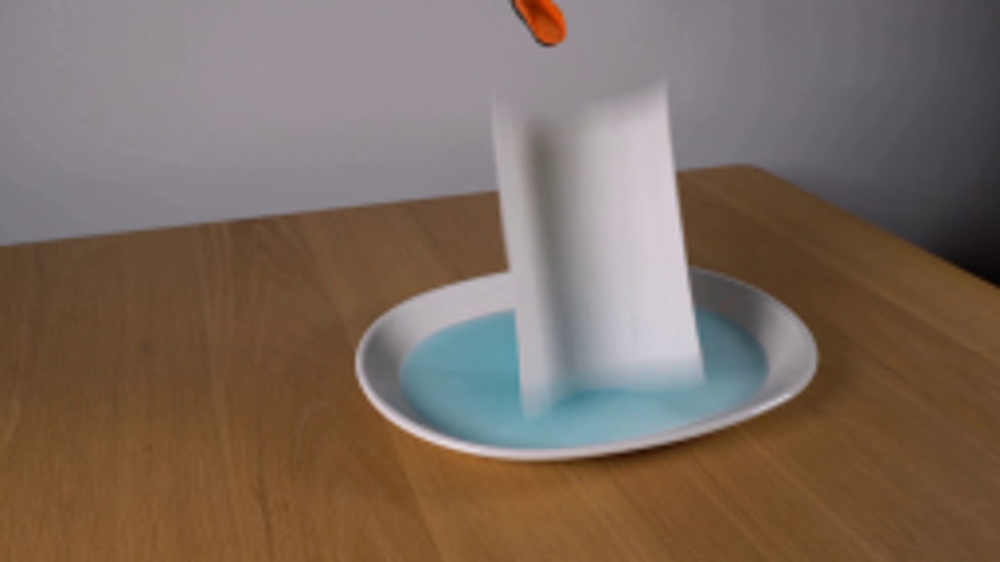
视觉工具实际返回图片 2
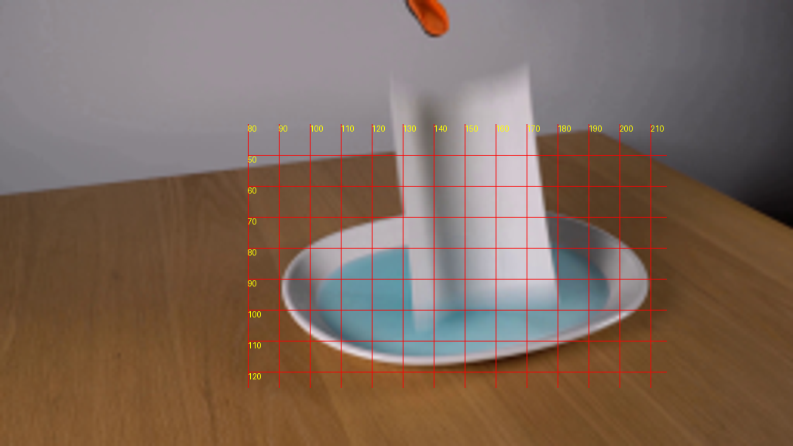
视觉工具实际返回图片 3
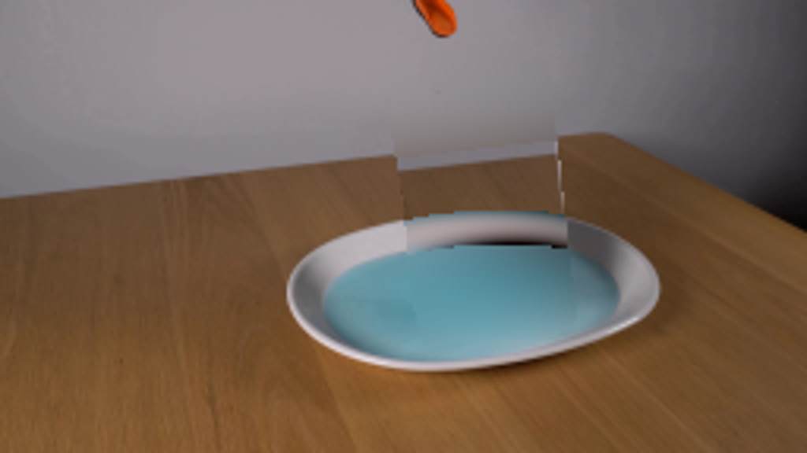
视觉工具实际返回图片 4
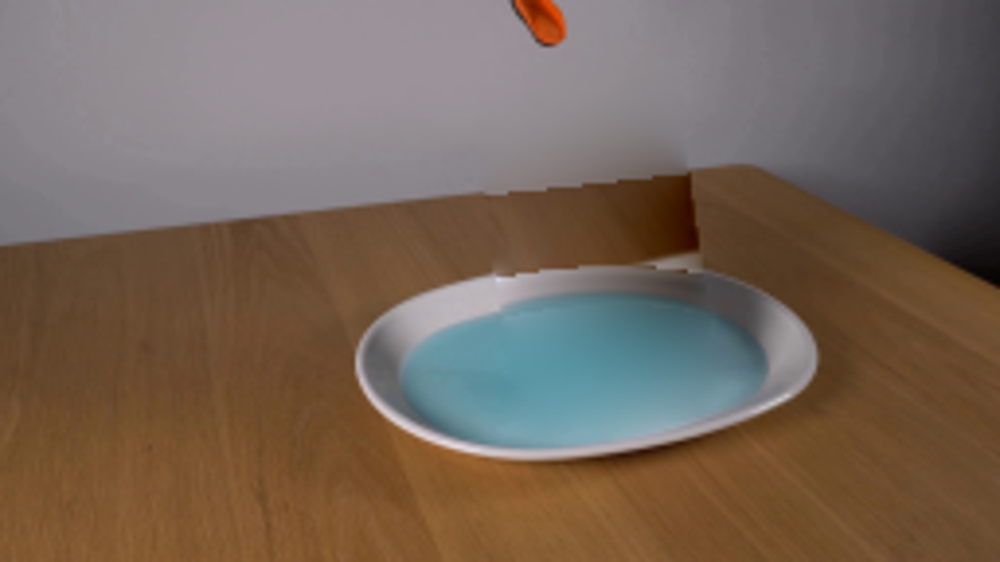
视觉工具实际返回图片 5
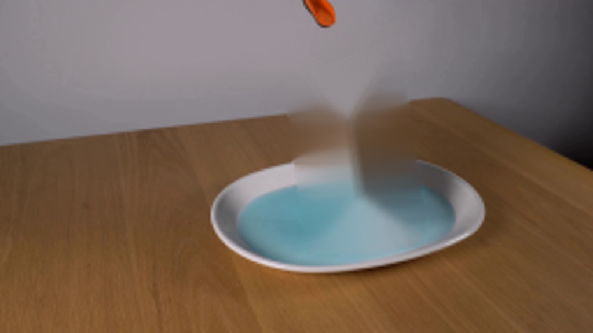
视觉工具实际返回图片 6
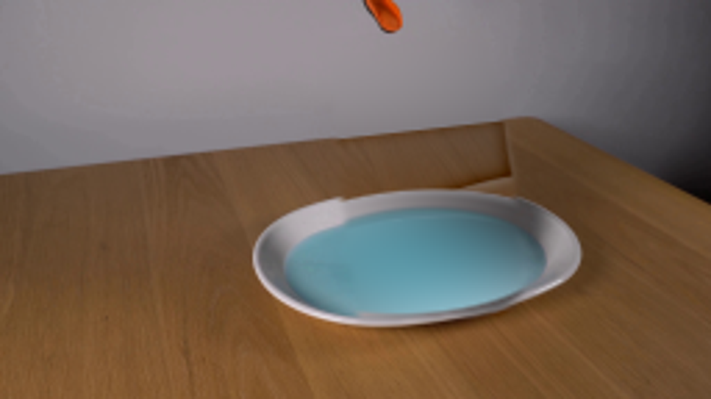
视觉工具实际返回图片 7
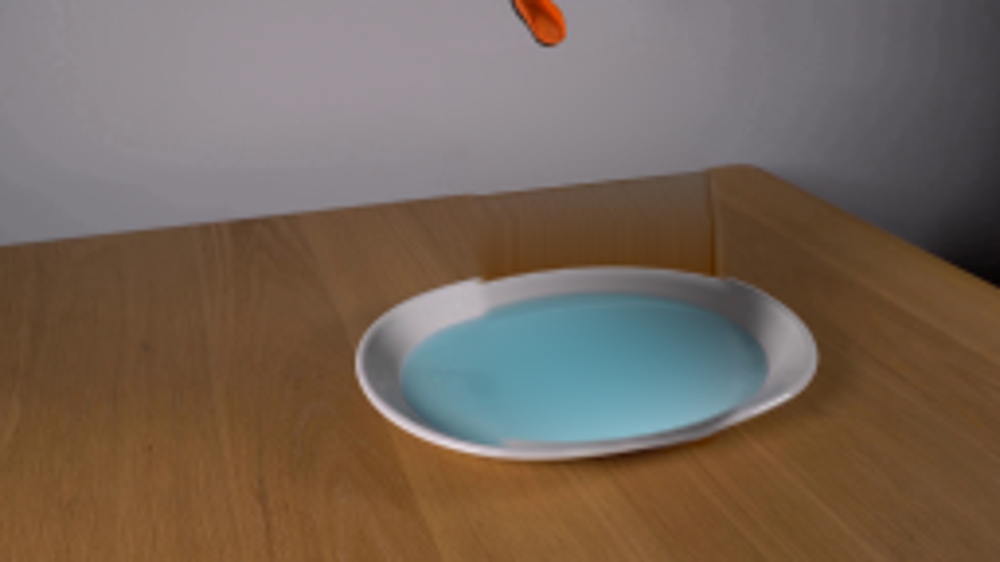
视觉工具实际返回图片 8
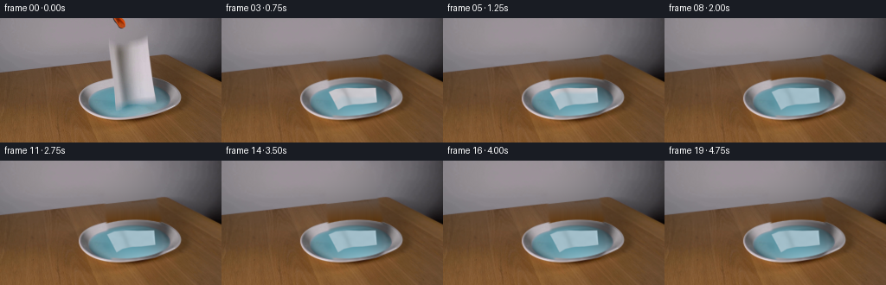
视觉工具实际返回图片 9

视觉工具实际返回图片 10
视觉工具实际返回图片 11
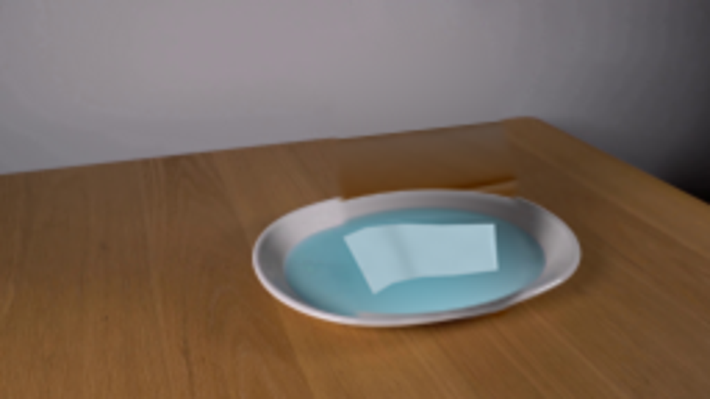
视觉工具实际返回图片 12
保存候选 5 份；完成命令 16 次；可验证图片返回 12 张。原始 API 响应与完整日志保留在本地。